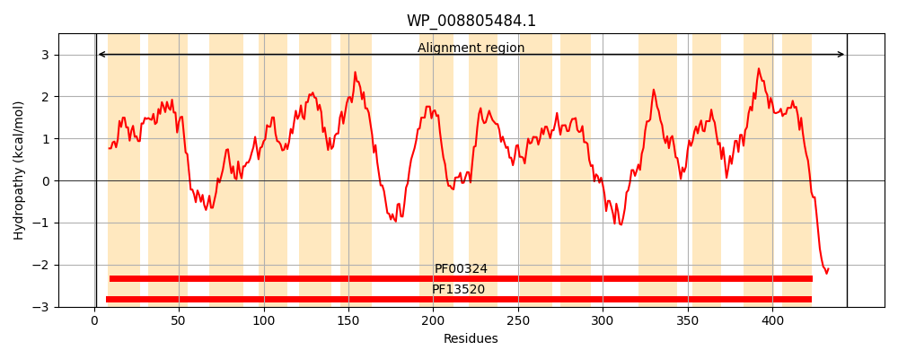
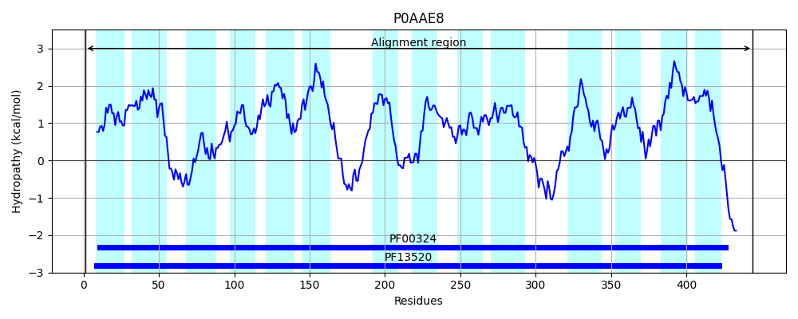
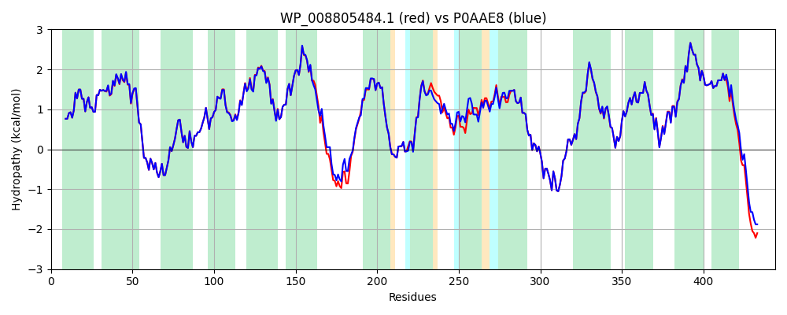

Hit Accession: P0AAE8
Hit TCID: 2.A.3.2.2
Hit Description: gnl|BL_ORD_ID|8661 gnl|TC-DB|P0AAE8|2.A.3.2.2 Probable cadaverine/lysine antiporter - Escherichia coli.
Mach Len: 444
e:0.000000
Query TMS Count : 14
Hit TMS Count: 14
TMS-Overlap Score: 13.500000
Predicted Substrates:CHEBI:3288;cadaverine
BLAST Alignment:
Score: 2168 , Bit scores: 839 bits, E-value: 0.0e+00, Alignment length: 444, Percentage identity: 93
Query: 1 MSSAKKIGLFACTGVVAGNMMGSGIALLPANLASIGGIAIWGWVISIIGAMSLAYVYARLATKNPQQGGPIAYAGEISPAFGFQTGVLYYHANWIGNLAIGITAVSYLSTFFPILNNPVPAGIACIAIVWIFTFVNMLGGTWVSRLTTIGLVLVLIPVVMTAVVGWHWFDVATYQANWNTSSTTDSHAVIKSILLCLWAFVGVESAAVSTGMVKNPKRTVPLATMLGTAMAGIVYIAATQVIAGMYPASQMAASGAPFAISASTILGGWAAPMVSAFTAFACLTSLGSWMMLVGQAGVRAANDGNFPKVYGEVDSNGIPKKGLLLAAVKMTALMVLITLMNSAGGKASDLFGELTGIAVLLTMLPYFYSCVDLIRFEGINIRNFVSLICSVLGCVFCFIALMGASSFELAGTFIVSLIILMFYGRKMHQRQNNATDNNSPANAH 444
MSSAKKIGLFACTGVVAGNMMGSGIALLPANLASIGGIAIWGW+ISIIGAMSLAYVYARLATKNPQQGGPIAYAGEISPAFGFQTGVLYYHANWIGNLAIGITAVSYLSTFFP+LN+PVPAGIACIAIVW+FTFVNMLGGTWVSRLTTIGLVLVLIPVVMTA+VGWHWFD ATY ANWNT+ TTD HA+IKSILLCLWAFVGVESAAVSTGMVKNPKRTVPLATMLGT +AGIVYIAATQV++GMYP+S MAASGAPFAISASTILG WAAP+VSAFTAFACLTSLGSWMMLVGQAGVRAANDGNFPKVYGEVDSNGIPKKGLLLAAVKMTALM+LITLMNSAGGKASDLFGELTGIAVLLTMLPYFYSCVDLIRFEG+NIRNFVSLICSVLGCVFCFIALMGASSFELAGTFIVSLIILMFY RKMH+RQ+++ DN++ +NAH
Sbjct: 1 MSSAKKIGLFACTGVVAGNMMGSGIALLPANLASIGGIAIWGWIISIIGAMSLAYVYARLATKNPQQGGPIAYAGEISPAFGFQTGVLYYHANWIGNLAIGITAVSYLSTFFPVLNDPVPAGIACIAIVWVFTFVNMLGGTWVSRLTTIGLVLVLIPVVMTAIVGWHWFDAATYAANWNTADTTDGHAIIKSILLCLWAFVGVESAAVSTGMVKNPKRTVPLATMLGTGLAGIVYIAATQVLSGMYPSSVMAASGAPFAISASTILGNWAAPLVSAFTAFACLTSLGSWMMLVGQAGVRAANDGNFPKVYGEVDSNGIPKKGLLLAAVKMTALMILITLMNSAGGKASDLFGELTGIAVLLTMLPYFYSCVDLIRFEGVNIRNFVSLICSVLGCVFCFIALMGASSFELAGTFIVSLIILMFYARKMHERQSHSMDNHTASNAH 444 | Protein Hydropathy Plots: |
|---|
|  |  |
Pairwise Alignment-Hydropathy Plot:
|
|---|
|  |